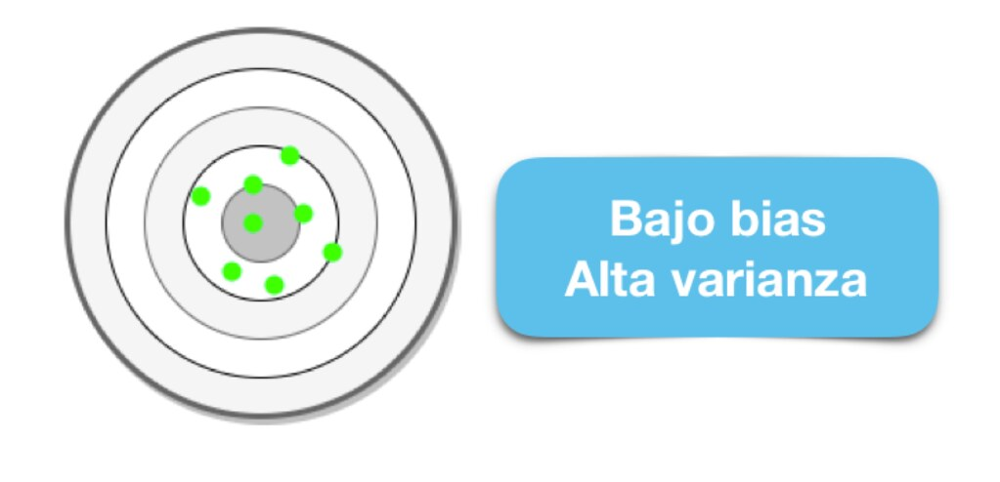
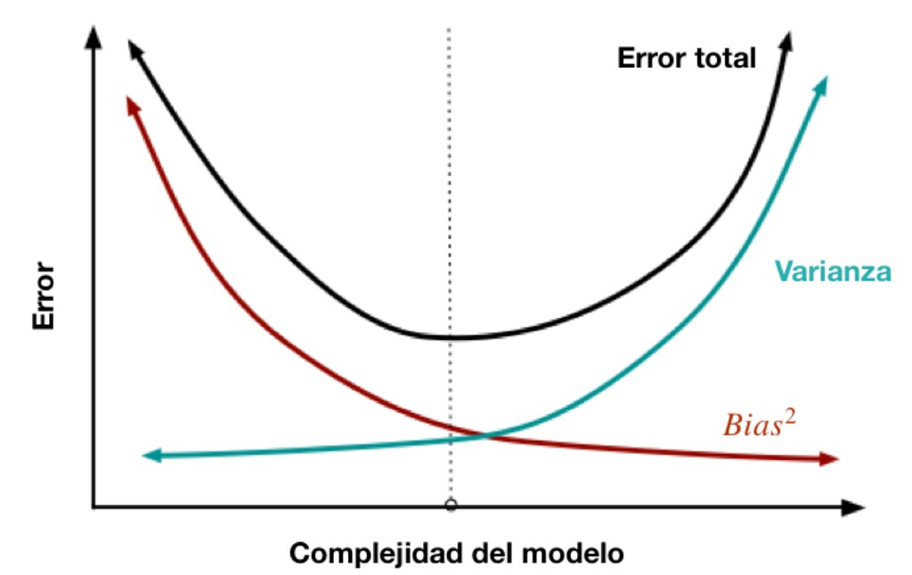
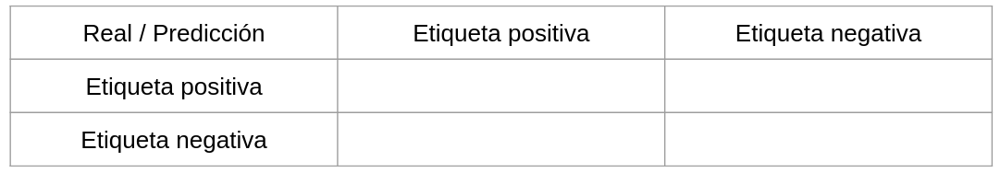
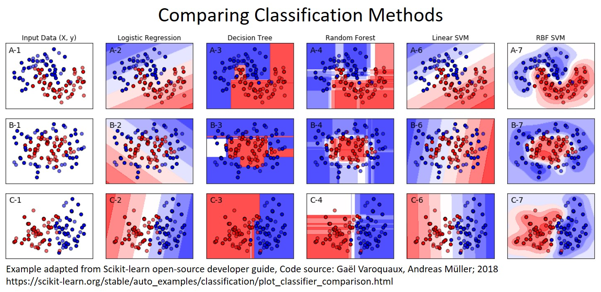
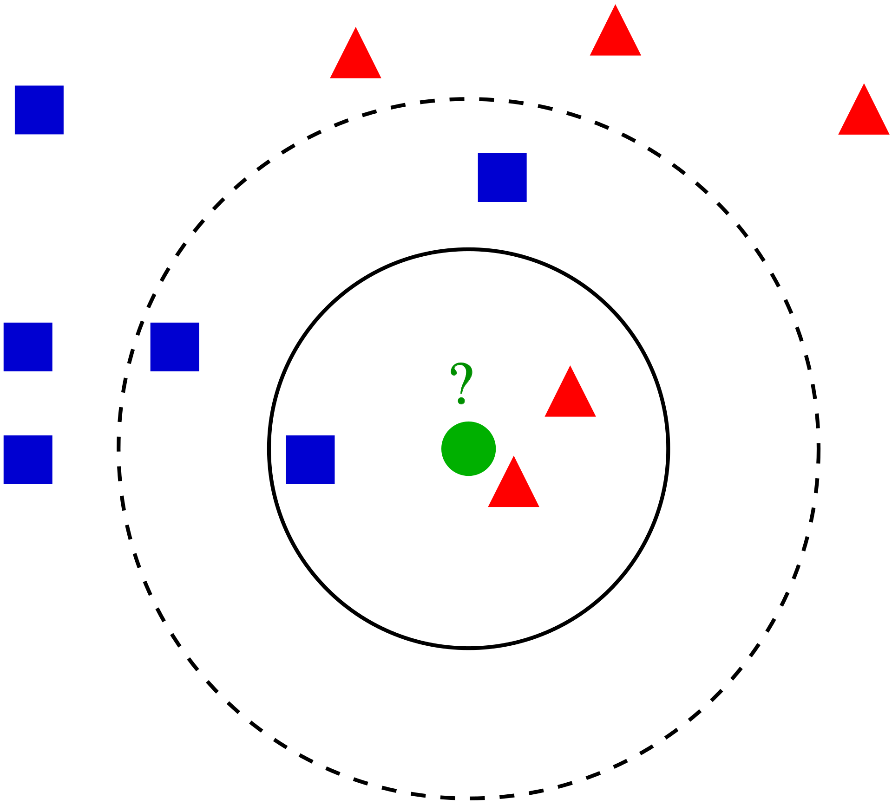
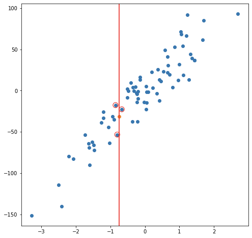
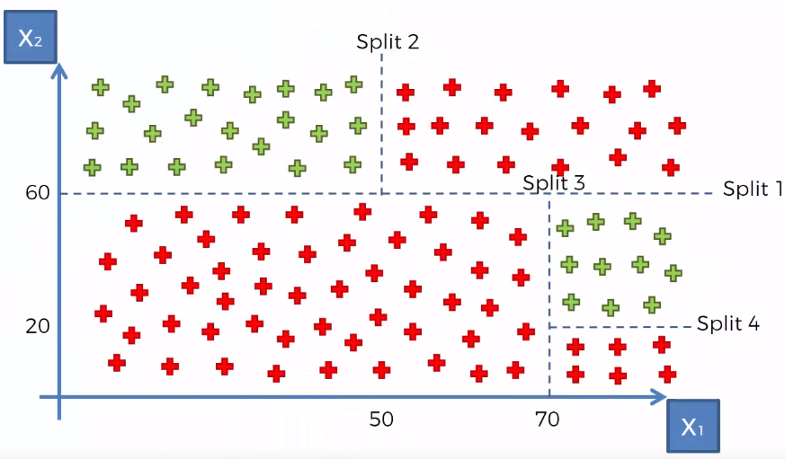

Capítulo 5 MACHINE LEARNING (Supervisado)

5.1 ML y Algoritmos
Como se habia mencionado, el Machine Learning es una disciplina del campo de la Inteligencia Artificial que, a través de algoritmos, dota a los ordenadores de la capacidad de identificar patrones en datos para hacer predicciones. Este aprendizaje permite a los computadores realizar tareas específicas de forma autónoma.
El término se utilizó por primera vez en 1959. Sin embargo, ha ganado relevancia en los últimos años debido al aumento de la capacidad de computación y al BOOM de los datos.
Un algoritmo para computadoras puede ser pensado como una receta. Describe exactamente qué pasos se realizan uno tras otro. Los ordenadores no entienden las recetas de cocina, sino los lenguajes de programación: En ellos, el algoritmo se descompone en pasos formales (comandos) que el ordenador puede entender.

Algunos problemas pueden formularse fácilmente como un algoritmo, por ejemplo, contando del 1 al 100 o comprobando si un número es un número primo. Para otros problemas, esto es muy difícil, por ejemplo, reconocer la escritura o el texto de las teclas. Aquí los procedimientos de aprendizaje de la máquina ayudan. Durante mucho tiempo se han desarrollado algoritmos que permiten analizar los datos existentes y aplicar los conocimientos derivados de ello a los nuevos datos.
La cuestión no es solo saber para qué sirve el Machine Learning, sino que saber cómo funciona y cómo poder implementarlo en la industria para aprovecharse de sus beneficios. Hay ciertos pasos que usualmente se siguen para crear un modelo de Machine Learning. Estos son típicamente realizados por científicos de los datos que trabajan en estrecha colaboración con los profesionales de los negocios para los que se está desarrollando el modelo.
- Seleccionar y preparar un conjunto de datos de entrenamiento
Los datos de entrenamiento son un conjunto de datos representativos de los datos que el modelo de Machine Learning ingerirá para resolver el problema que está diseñado para resolver.
Los datos de entrenamiento deben prepararse adecuadamente: aleatorizados y comprobados en busca de desequilibrios o sesgos que puedan afectar al entrenamiento. También deben dividirse en dos subconjuntos: el subconjunto de entrenamiento, que se utilizará para entrenar el algoritmo, y el subconjunto de validación, que se utilizará para probarlo y perfeccionarlo.

- Elegir un algoritmo para ejecutarlo en el conjunto de datos de entrenamiento
Este es uno de los pasos más importantes, ya que se debe elegir qué algoritmo utilizar, siendo este un conjunto de pasos de procesamiento estadístico. El tipo de algoritmo depende del tipo (supervisado o no supervisado), la cantidad de datos del conjunto de datos de entrenamiento y del tipo de problema que se debe resolver.


- Entrenamiento del algoritmo para crear el modelo
El entrenamiento del algoritmo es un proceso iterativo: implica ejecutar las variables a través del algoritmo, comparar el resultado con los resultados que debería haber producido, ajustar los pesos y los sesgos dentro del algoritmo que podrían dar un resultado más exacto, y ejecutar las variables de nuevo hasta que el algoritmo devuelva el resultado correcto la mayoría de las veces. El algoritmo resultante, entrenado y preciso, es el modelo de Machine Learning.
- Usar y mejorar el modelo
El paso final es utilizar el modelo con nuevos datos y, en el mejor de los casos, para que mejore en precisión y eficacia con el tiempo. De dónde procedan los nuevos datos dependerá del problema que se resuelva. Por ejemplo, un modelo de Machine Learning diseñado para identificar el spam ingerirá mensajes de correo electrónico, mientras que un modelo de Machine Learning que maneja una aspiradora robot ingerirá datos que resulten de la interacción en el mundo real con muebles movidos o nuevos objetos en la habitación.

5.2 Sesgo vs varianza
En el mundo de Machine Learning cuando desarrollamos un modelo nos esforzamos para hacer que sea lo más preciso, ajustando los parámetros, pero la realidad es que no se puede construir un modelo 100% preciso ya que nunca pueden estar libres de errores.
Comprender cómo las diferentes fuentes de error generan sesgo y varianza nos ayudará a mejorar el proceso de ajuste de datos, lo que resulta en modelos más precisos, adicionalmente también evitará el error de sobreajuste y falta de ajuste.
5.2.1 Balance entre sesgo y varianza o Trade-off
El objetivo de cualquier algoritmo supervisado de Machine Learning es lograr un bias bajo, una baja varianza y a su vez el algoritmo debe lograr un buen rendimiento de predicción.

El bias frente a la varianza se refiere a la precisión frente a la consistencia de los modelos entrenados por su algoritmo. Podemos diagnosticarlos de la siguiente manera:

Los algoritmos de baja varianza (alto bias) tienden a ser menos complejos, con una estructura subyacente simple o rígida.

Los algoritmos de bajo bias (alta varianza) tienden a ser más complejos, con una estructura subyacente flexible.
No hay escapatoria a la relación entre el bias y la varianza en Machine Learning, aumentar el bias disminuirá la varianza, aumentar la varianza disminuirá el bias.
5.2.2 Overfitting
El modelo es muy particular.
Error debido a la varianza
Durante el entrenamiento tiene un desempeño muy bueno, pero al pasar nuevos datos su desempeño es malo.
5.2.3 Underfitting
El modelo es demasiado general.
Error debido al sesgo.
Durante el entrenamiento no tiene un buen desempeño.

5.3 Estimación de errores
5.3.1 Errores reducibles
- Error por sesgo:
Es la diferencia entre la predicción esperada de nuestro modelo y los valores verdaderos. Aunque al final nuestro objetivo es siempre construir modelos que puedan predecir datos muy cercanos a los valores verdaderos, no siempre es tan fácil porque algunos algoritmos son simplemente demasiado rígidos para aprender señales complejas del conjunto de datos.
Imagina ajustar una regresión lineal a un conjunto de datos que tiene un patrón no lineal, no importa cuántas observaciones más recopiles, una regresión lineal no podrá modelar las curvas en esos datos. Esto se conoce como underfitting.
- Error por varianza:
Se refiere a la cantidad que la estimación de la función objetivo cambiará si se utiliza diferentes datos de entrenamiento. La función objetivo se estima a partir de los datos de entrenamiento mediante un algoritmo de Machine Learning, por lo que deberíamos esperar que el algoritmo tenga alguna variación. Idealmente no debería cambiar demasiado de un conjunto de datos de entrenamiento a otro.

Los algoritmos de Machine Learning que tienen una gran varianza están fuertemente influenciados por los detalles de los datos de entrenamiento, esto significa que los detalles de la capacitación influyen en el número y los tipos de parámetros utilizados para caracterizar la función de mapeo.
5.3.2 Error irreducible
El error irreducible no se puede reducir, independientemente de qué algoritmo se usa. También se le conoce como ruido y, por lo general, proviene por factores como variables desconocidas que influyen en el mapeo de las variables de entrada a la variable de salida, un conjunto de características incompleto o un problema mal enmarcado. Acá es importante comprender que no importa cuán bueno hagamos nuestro modelo, nuestros datos tendrán cierta cantidad de ruido o un error irreductible que no se puede eliminar.
5.3.3 Error total
Comprender el sesgo y la varianza es fundamental para comprender el comportamiento de los modelos de predicción, pero en general lo que realmente importa es el error general, no la descomposición específica. El punto ideal para cualquier modelo es el nivel de complejidad en el que el aumento en el sesgo es equivalente a la reducción en la varianza.

Para construir un buen modelo, necesitamos encontrar un buen equilibrio entre el bias y la varianza de manera que minimice el error total.
Un equilibrio óptimo de bias y varianza nunca sobreequiparía o no sería adecuado para el modelo. Por lo tanto comprender el sesgo y la varianza es fundamental para comprender el comportamiento de los modelos de predicción.
5.4 Partición de datos

Cuando hay una gran cantidad de datos disponibles, una estrategia inteligente es asignar subconjuntos específicos de datos para diferentes tareas, en lugar de asignar la mayor cantidad posible solo a la estimación de los parámetros del modelo.
Si el conjunto inicial de datos no es lo suficientemente grande, habrá cierta superposición de cómo y cuándo se asignan nuestros datos, y es importante contar con una metodología sólida para la partición de datos.
5.4.1 Métodos comunes para particionar datos
El enfoque principal para la validación del modelo es dividir el conjunto de datos existente en dos conjuntos distintos:
Entrenamiento: Este conjunto suele contener la mayoría de los datos, los cuales sirven para la construcción de modelos donde se pueden ajustar diferentes modelos, se investigan estrategias de ingeniería de características, etc.
La mayor parte del proceso de modelado se utiliza este conjunto.
Prueba: La otra parte de las observaciones se coloca en este conjunto. Estos datos se mantienen en reserva hasta que se elijan uno o dos modelos como los de mejor rendimiento.
El conjunto de prueba se utiliza como árbitro final para determinar la eficiencia del modelo, por lo que es fundamental mirar el conjunto de prueba una sola vez.
5.4.2 ¿Qué proporción debería ser usada?
No hay un porcentaje de división óptimo para el conjunto de entrenamiento y prueba. Muy pocos datos en el conjunto de entrenamiento obstaculizan la capacidad del modelo para encontrar estimaciones de parámetros adecuadas y muy pocos datos en el conjunto de prueba reducen la calidad de las estimaciones de rendimiento.
Se debe elegir un porcentaje que cumpla con los objetivos de nuestro proyecto con consideraciones que incluyen:
- Costo computacional en el entrenamiento del modelo.
- Costo computacional en la evaluación del modelo.
- Representatividad del conjunto de formación.
- Representatividad del conjunto de pruebas.
Los porcentajes de división más comunes comunes son:
- Entrenamiento: \(80\%\), Prueba: \(20\%\)
- Entrenamiento: \(67\%\), Prueba: \(33\%\)
- Entrenamiento: \(50\%\), Prueba: \(50\%\)
5.4.3 Conjunto de validación
El conjunto de validación se definió originalmente cuando los investigadores se dieron cuenta de que medir el rendimiento del conjunto de entrenamiento conducía a resultados que eran demasiado optimistas.
Esto llevó a modelos que se sobreajustaban, lo que significa que se desempeñaron muy bien en el conjunto de entrenamiento pero mal en el conjunto de prueba.
Para combatir este problema, se retuvo un pequeño conjunto de datos de validación y se utilizó para medir el rendimiento del modelo mientras este está siendo entrenado. Una vez que la tasa de error del conjunto de validación comenzara a aumentar, la capacitación se detendría.
En otras palabras, el conjunto de validación es un medio para tener una idea aproximada de qué tan bien se desempeñó el modelo antes del conjunto de prueba.

Los conjuntos de validación se utilizan a menudo cuando el conjunto de datos original es muy grande. En este caso, una sola partición grande puede ser adecuada para caracterizar el rendimiento del modelo sin tener que realizar múltiples iteraciones de remuestreo.

5.5 Métricas de desempeño y estimación de errores
Hasta ahora ya se ha visto cual es el proceso que debe llevar un modelo de Machine Learning y si bien, el alcance, la manera de preparar los datos, la elección de los algoritmos y el entrenamiento son partes clave, es igualmente importante medir el rendimiento del modelo entrenado. Al utilizar diferentes métricas para la evaluación del rendimiento, deberíamos estar en posición de detectar algún problema o de mejorar el poder de predicción general de nuestro modelo antes de que lo pongamos en producción.
5.5.1 Métricas de desempeño para clasificación
Existen distintas métricas de desempeño para problemas de clasificación, debido a que contamos con la respuesta correcta podemos contar cuántos aciertos tuvimos y cuántos fallos tuvimos.
Primero, por simplicidad ocuparemos un ejemplo de clasificación binaria, Fraude (1) o No fraude (0).
En este tipo de algoritmos definimos cuál de las categorías será nuestra etiqueta positiva y cuál será la negativa. La positiva será la categoría que queremos predecir -en nuestro ejemplo, fraude- y la negativa lo opuesto -en el caso binario- en nuestro ejemplo, no fraude.
Dadas estas definiciones tenemos 4 posibilidades:
True positives: Nuestra predicción dijo que la transacción es fraude y la etiqueta real dice que es fradue.
False positives: Nuestra predicción dijo que la transacción es fraude y la etiqueta real dice que no es fraude.
True negatives: Nuestra predicción dijo que la transacción es no fraude y la etiqueta real dice que no es fraude.
False negatives: Nuestra predicción dijo que la transacción es no fraude y la etiqueta real dice que es fraude.
Matriz de confusión

Esta métrica corresponde a una matriz en donde se plasma el conteo de los aciertos y los errores que haya hecho el modelo.
En esta métrica utilizamos todos los aciertos y todos los errores que haya tenido el modelo en las predicciones, esto es: los verdaderos positivos (TP), los verdaderos negativos (TN), los falsos positivos (FP) y los falsos negativos (FN).
Normalmente los renglones representan las etiquetas reales, ya sean positivas o negativas, y las columnas, las etiquetas predichas.
- Accuracy
Número de aciertos totales entre todas las predicciones.
\[accuracy = \frac{TP + TN}{ TP+FP+TN+FN}\]
La métrica más utilizada, en datasets imbalanceados esta métrica no nos sirve, al contrario, nos engaña.
- Precision: Eficiencia
De los que identificamos como clase positiva, cuántos identificamos correctamente. ¿Qué tan eficientes somos en la predicción?
\[precision = \frac{TP}{TP + FP}\]
¿Cuándo utilizar precision?
Esta es la métrica que ocuparás más, pues en un contexto de negocio, donde los recursos son finitos y tiene un costo asociado, ya sea monetario o de tiempo o de recursos, necesitarás que las predicciones de tu etiqueta positiva sean muy eficientes.
Al utilizar esta métrica estaremos optimizando el modelo para minimizar el número de falsos positivos.
- Recall o Sensibilidad: Cobertura
Del universo posible de nuestra clase positiva, cuántos identificamos correctamente.
\[recall = \frac{TP}{TP + FN }\]
Esta métrica la ocuparás cuando en el contexto de negocio de tu problema sea más conveniente minimizar los falsos negativos por el impacto que estos pueden tener en las personas en quienes se implementará la predicción.
Al utilizar esta métrica estaremos optimizando el modelo para minimizar el número de falsos negativos.
- Especificidad
Es el número de observaciones correctamente identificados como negativos fuera del total de negativos.
\[Specificity = \frac{TN}{TN+FP}\]
- F1-score
Combina precision y recall para optimizar ambos.
\[F = 2 *\frac{precision * recall}{precision + recall} \]
Se recomienda utilizar esta métrica de desempeño cuando quieres balancear tanto los falsos positivos como los falsos negativos. Aunque es una buena solución para tomar en cuenta ambos errores, pocas veces hay problemas reales que permiten ocuparla, esto es porque en más del 90% de los casos tenemos una restricción en recursos.
Ahora con esto en mente podemos definir las siguientes métricas:
- AUC y ROC: Area Under the Curve y Receiver operator characteristic

Una curva ROC es un gráfico que muestra el desempeño de un modelo de clasificación en todos los puntos de corte.
AUC significa “Área bajo la curva ROC.” Es decir, AUC mide el área debajo de la curva ROC.
5.5.2 Implementación con R
Vamos a analizar los resultados de varios modelos, ellos pueden encontrarlos en la carpeta de archivos del curso: DATOS
library(magrittr)
library(tidymodels)
predicted_data <- readRDS("data/predicted_data.rds")
predicted_data %>% head(8) %>% knitr::kable()| .pred_No | .pred_Yes | truth | customerID | gender | SeniorCitizen | Partner | Dependents | tenure | PhoneService | MultipleLines | InternetService | OnlineSecurity | OnlineBackup | DeviceProtection | TechSupport | StreamingTV | StreamingMovies | Contract | PaperlessBilling | PaymentMethod | MonthlyCharges | TotalCharges | Churn |
|---|---|---|---|---|---|---|---|---|---|---|---|---|---|---|---|---|---|---|---|---|---|---|---|
| 0.9611667 | 0.0388333 | No | 5575-GNVDE | Male | 0 | No | No | 34 | Yes | No | DSL | Yes | No | Yes | No | No | No | One year | No | Mailed check | 56.95 | 1889.50 | No |
| 0.2345000 | 0.7655000 | Yes | 9305-CDSKC | Female | 0 | No | No | 8 | Yes | Yes | Fiber optic | No | No | Yes | No | Yes | Yes | Month-to-month | Yes | Electronic check | 99.65 | 820.50 | Yes |
| 0.6030000 | 0.3970000 | No | 6713-OKOMC | Female | 0 | No | No | 10 | No | No phone service | DSL | Yes | No | No | No | No | No | Month-to-month | No | Mailed check | 29.75 | 301.90 | No |
| 0.9960000 | 0.0040000 | No | 7469-LKBCI | Male | 0 | No | No | 16 | Yes | No | No | No internet service | No internet service | No internet service | No internet service | No internet service | No internet service | Two year | No | Credit card (automatic) | 18.95 | 326.80 | No |
| 0.9804167 | 0.0195833 | No | 9959-WOFKT | Male | 0 | No | Yes | 71 | Yes | Yes | Fiber optic | Yes | No | Yes | No | Yes | Yes | Two year | No | Bank transfer (automatic) | 106.70 | 7382.25 | No |
| 0.3996667 | 0.6003333 | No | 4183-MYFRB | Female | 0 | No | No | 21 | Yes | No | Fiber optic | No | Yes | Yes | No | No | Yes | Month-to-month | Yes | Electronic check | 90.05 | 1862.90 | No |
| 0.9965833 | 0.0034167 | No | 1680-VDCWW | Male | 0 | Yes | No | 12 | Yes | No | No | No internet service | No internet service | No internet service | No internet service | No internet service | No internet service | One year | No | Bank transfer (automatic) | 19.80 | 202.25 | No |
| 0.7549167 | 0.2450833 | No | 6322-HRPFA | Male | 0 | Yes | Yes | 49 | Yes | No | DSL | Yes | Yes | No | Yes | No | No | Month-to-month | No | Credit card (automatic) | 59.60 | 2970.30 | No |
pr_curve_rforest_clas <- predicted_data %>%
pr_curve(truth = truth, estimate = .pred_Yes, event_level = 'second')
roc_curve_rforest_clas <- predicted_data %>%
roc_curve(truth = truth, estimate = .pred_Yes, event_level = 'second')roc_curve_rforest_clas %>%
autoplot() +
ggtitle("Curva ROC") +
xlab("Tasa Falsos Positivos") +
ylab("Cobertura")
pr_curve_rforest_clas %>%
autoplot() +
ggtitle("Curva PR") +
xlab("Cobertura") +
ylab("Precisión")
cm <- predicted_data %>%
mutate(est = factor(if_else(.pred_Yes > 0.5, "Yes", "No"))) %>%
yardstick::conf_mat(truth = truth, estimate = est)
autoplot(cm, type = "heatmap") +
ggtitle("Matriz de Confusión") +
xlab("Verdaderos") +
ylab("Predicciones")
predicted_data %<>%
mutate(est = factor(if_else(.pred_Yes > 0.5, "Yes", "No")))
bind_rows(
predicted_data %>%
yardstick::precision(truth, est, event_level = "second"),
predicted_data %>%
yardstick::recall(truth, est, event_level = "second"),
predicted_data %>%
yardstick::accuracy(truth, est, event_level = "second"),
predicted_data %>%
roc_auc(truth = truth, estimatator = .pred_Yes, event_level = "second"),
predicted_data %>%
pr_auc(truth = truth, estimatator = .pred_Yes, event_level = "second")
)## # A tibble: 5 × 3
## .metric .estimator .estimate
## <chr> <chr> <dbl>
## 1 precision binary 0.617
## 2 recall binary 0.472
## 3 accuracy binary 0.780
## 4 roc_auc binary 0.787
## 5 pr_auc binary 0.593Comparemos los resultados de otros modelos:
results_cla_tree <- readRDS(file = 'data/results_cla_tree.RDS')
results_cla_rforest <- readRDS(file = 'data/results_cla_rforest.RDS')
results_cla_logistico <- readRDS( file = 'data/results_cla_logistico.RDS')
roc_curve_cla_tree <- roc_curve(
results_cla_tree, truth = truth, estimate = .pred_Yes, event_level = 'second') %>%
mutate(ID = 'Árbol de decisión')
roc_curve_cla_random <- roc_curve(
results_cla_rforest, truth = truth, estimate = .pred_Yes, event_level = 'second') %>%
mutate(ID = 'Random Forest')
roc_curve_cla_logistico <- roc_curve(
results_cla_logistico, truth = Churn, estimate = .pred_Yes, event_level = 'second') %>%
mutate(ID = 'Logit')
pr_curve_cla_tree <- pr_curve(
results_cla_tree, truth = truth, estimate = .pred_Yes, event_level = 'second') %>%
mutate(ID = 'Árbol de decisión')
pr_curve_cla_random <- pr_curve(
results_cla_rforest, truth = truth, estimate = .pred_Yes, event_level = 'second') %>%
mutate(ID = 'Random Forest')
pr_curve_cla_logistico <- pr_curve(
results_cla_logistico, truth = Churn, estimate = .pred_Yes, event_level = 'second') %>%
mutate(ID = 'Logit')
# Pegamos id a los resultados de cada modelo
results_pr_curve <- rbind( pr_curve_cla_tree, pr_curve_cla_logistico, pr_curve_cla_random )
results_roc_curve <- rbind(roc_curve_cla_tree,roc_curve_cla_logistico,roc_curve_cla_random)# Curvas pecision recall y ROC
pr_curve_plot <- results_pr_curve %>%
ggplot(aes(x = recall, y = precision, color = ID)) +
geom_path(size = 1) +
coord_equal() +
ggtitle("Precision vs Recall") +
theme_minimal()
roc_curve_plot <- results_roc_curve %>%
ggplot(aes(x = 1 - specificity, y = sensitivity, color = ID)) +
geom_path(size = 1) +
geom_abline() +
coord_equal() +
ggtitle("ROC Curve") +
theme_minimal()
pr_curve_plot 
roc_curve_plot
5.6 Algotitmos de machine learning
Hasta este momento, se ha aprendido cuáles son las métricas más utilizadas para la evaluación de modelos de machine learning, así como la importancia del problema, contexto a resolver y en qué casos una métrica algunas métricas son más relevantes que otras. Apendimos también a interpretar el trade-off entre distintas métricas para tomar decisiones adecuadas a nuestros recursos disponibles.
Ahora, se conocerá la estructura e idea general de algoritmos que son frecuentemente usados en la industria.

5.6.1 Regresión logística
En esta sección aprenderemos sobre regresión logística. Existen dos tipos de modelos de regresión logística: regresión simple y regresión múltiple. La regresión logística simple es cuando se utiliza una variable independiente para estimar la probabilidad de pertenecer a un grupo de una variable cualitativa binaria. Cuando se utiliza más de una variable independiente, el proceso se denomina regresión logística múltiple.
5.6.1.1 Función sigmoide
Si una variable cualitativa con dos categorías se codifica como 1 y 0, matemáticamente es posible ajustar un modelo de regresión lineal por mínimos cuadrados. El problema de esta aproximación es que, al tratarse de una recta, para valores extremos del predictor, se obtienen valores de \(Y\) menores que 0 o mayores que 1, lo que entra en contradicción con el hecho de que las probabilidades siempre están dentro del rango [0,1].
Para evitar estos problemas, la regresión logística transforma el valor devuelto por la regresión lineal empleando una función cuyo resultado está siempre comprendido entre 0 y 1. Existen varias funciones que cumplen esta descripción, una de las más utilizadas es la función logística (también conocida como función sigmoide):
\[\sigma(x)=\frac{1}{1+e^{-x}}\] Función sigmoide:
 Para valores de \(x\) muy grandes, el valor de \(e^{-x}\) es aproximadamente 0 por lo que el valor de la función sigmoide es 1. Para valores de \(x\) muy negativos, el valor \(e^{-x}\) tiende a infinito por lo que el valor de la función sigmoide es 0.
Para valores de \(x\) muy grandes, el valor de \(e^{-x}\) es aproximadamente 0 por lo que el valor de la función sigmoide es 1. Para valores de \(x\) muy negativos, el valor \(e^{-x}\) tiende a infinito por lo que el valor de la función sigmoide es 0.
Sustituyendo la \(x\) de la función sigmoide por la función lineal \(\beta_0+\beta_1X\) se obtiene que:
\[P(Y=k|X=x)=\frac{e^{\beta_0+\beta_1X}}{1+e^{\beta_0+\beta_1X}}\]
donde \(P(Y=k|X=x)\) puede interpretarse como: la probabilidad de que la variable cualitativa \(Y\) adquiera el valor \(k\), dado que el predictor \(X\) tiene el valor \(x\).
Esta función, puede ajustarse de forma sencilla con métodos de regresión lineal si se emplea su versión logarítmica:
\[ln(\frac{p(Y=k|X=x)}{1−p(Y=k|X=x)})=\beta_0+\beta_1X\]
5.6.2 KNN: K-Nearest-Neighbor
KNN es un algoritmo de aprendizaje supervisado que podemos usar para regresión o clasificación.
La idea detrás del algoritmo es sencilla, este clasifica una nueva observación en la categoria que tenga mas elementos de las k observaciones más cercanas. Es decir, se calculará la distancia de esta nueva observación a cada observación existente, ordenaremos estas distancias de menor a mayor, tomamos las k primeras distancias, la nueva observación sera asignada al grupo que tenga mayor número de observaciones en estas k primeras distancias.
Clasificación
¿Cómo debería ser clasificada la nueva observación?


Ejemplo:

Regresión:
Considerando un modelo de 3 vecinos más cercanos, las siguientes imágenes muestran el proceso de ajuste y predicción de nuevas observaciones.


Ejemplo de balance de sesgo y varianza

5.6.3 Árboles de decisión (Decision trees)

Un árbol de decisiones es un algoritmo del aprendizaje supervisado que se puede utilizar tanto para problemas de clasificación como de regresión. Es un clasificador estructurado en árbol, donde los nodos internos representan las características de un conjunto de datos, las ramas representan las reglas de decisión y cada nodo hoja representa el resultado. La idea básica de los árboles es buscar puntos de cortes en las variables de entrada para hacer predicciones, ir dividiendo la muestra, y encontrar cortes sucesivos para refinar las predicciones.
En un árbol de decisión, hay dos tipos nodos, el nodo de decisión o nodos internos (Decision Node) y el nodo hoja o nodo terminal (Leaf node). Los nodos de decisión se utilizan para tomar cualquier decisión y tienen múltiples ramas, mientras que los nodos hoja son el resultado de esas decisiones y no contienen más ramas.

- Regresión:


- Clasificación:



5.6.4 Bagging
Primero tenemos que definir qué es la ** Agregación de Bootstrap o Bagging**. Este es un aalgoritmo de aprendizaje automático diseñado para mejorar la estabilidad y precisión de algoritmos de ML usados en clasificación estadística y regresión. Además reduce la varianza y ayuda a evitar el sobreajuste. Aunque es usualmente aplicado a métodos de árboles de decisión, puede ser usado con cualquier tipo de método. Bagging es un caso especial del promediado de modelos.
Los métodos de bagging son métodos donde los algoritmos simples son usados en paralelo. El principal objetivo de los métodos en paralelo es el de aprovecharse de la independencia que hay entre los algoritmos simples, ya que el error se puede reducir bastante al promediar las salidas de los modelos simples. Es como si, queriendo resolver un problema entre varias personas independientes unas de otras, damos por bueno lo que eligiese la mayoría de las personas.
Para obtener la agregación de las salidas de cada modelo simple e independiente, bagging puede usar la votación para los métodos de clasificiación y el promedio para los métodos de regresión.

5.6.5 Random Forest
Un bosque aleatorio es un algoritmo de aprendizaje automático supervisado que se construye a partir de algoritmos de árbol de decisión. Este algoritmo se aplica en diversas industrias, como la banca y el comercio electrónico, para predecir el comportamiento y los resultados.
En esta clase se dará una descripción general del algoritmo de bosque aleatorio, cómo funciona y las características del algoritmo.
También se señalan las ventajas y desventajas de este algoritmo.
¿Qué es?
Un bosque aleatorio es una técnica de aprendizaje automático que se utiliza para resolver problemas de regresión y clasificación. Utiliza el aprendizaje por conjuntos, que es una técnica que combina muchos clasificadores para proporcionar soluciones a problemas complejos.
Este algoritmo consta de muchos árboles de decisión. El “bosque” generado se entrena mediante agregación de bootstrap (bagging), el cual es es un meta-algoritmo de conjunto que mejora la precisión de los algoritmos de aprendizaje automático.
El algoritmo establece el resultado en función de las predicciones de los árboles de decisión. Predice tomando el promedio o la media de la salida de varios árboles. El aumento del número de árboles aumenta la precisión del resultado.
Un bosque aleatorio erradica las limitaciones de un algoritmo de árbol de decisión. Reduce el sobreajuste de conjuntos de datos y aumenta la precisión.

5.6.5.1 Características de los bosques aleatorios
Es más preciso que el algoritmo árbol de decisiones.
Proporciona una forma eficaz de gestionar los datos faltantes.
Puede producir una predicción razonable sin ajuste de hiperparámetros.
Resuelve el problema del sobreajuste en los árboles de decisión.
En cada árbol forestal aleatorio, se selecciona aleatoriamente un subconjunto de características en el punto de división del nodo.
5.6.5.2 Aplicar árboles de decisión en un bosque aleatorio
La principal diferencia entre el algoritmo de árbol de decisión y el algoritmo de bosque aleatorio es que el establecimiento de nodos raíz y la desagregación de nodos se realiza de forma aleatoria en este último. El bosque aleatorio emplea el método de bagging para generar la predicción requerida.
El método bagging implica el uso de diferentes muestras de datos (datos de entrenamiento) en lugar de una sola muestra. Los árboles de decisión producen diferentes resultados, dependiendo de los datos de entrenamiento alimentados al algoritmo de bosque aleatorio. Estos resultados se clasificarán y se seleccionará el más alto como resultado final.
Nuestro primer ejemplo todavía se puede utilizar para explicar cómo funcionan los bosques aleatorios. Supongamos que solo tenemos cuatro árboles de decisión. En este caso, los datos de entrenamiento que comprenden las observaciones y funciones del teléfono se dividirán en cuatro nodos raíz.
Los nodos raíz podrían representar cuatro características que podrían influir en la elección del cliente (precio, almacenamiento interno, cámara y RAM). El bosque aleatorio dividirá los nodos seleccionando características al azar. La predicción final se seleccionará en función del resultado de los cuatro árboles.
El resultado elegido por la mayoría de los árboles de decisión será la elección final.
Si tres árboles predicen la compra y un árbol predice que no comprará, entonces la predicción final será la compra. En este caso, se prevé que el cliente comprará el teléfono.
El siguiente diagrama muestra un clasificador de bosque aleatorio simple.


5.6.5.3 Ventajas y desventajas de bosques aleatorios
Ventajas
Puede realizar tareas de regresión y clasificación.
Un bosque aleatorio produce buenas predicciones que se pueden entender fácilmente.
Puede manejar grandes conjuntos de datos de manera eficiente.
Proporciona un mayor nivel de precisión en la predicción de resultados sobre el algoritmo del árbol de decisión.
Desventajas
Cuando se usa un bosque aleatorio, se requieren bastantes recursos para el cálculo.
Consume más tiempo en comparación con un algoritmo de árbol de decisiones.
No producen buenos resultados cuando los datos son muy escasos. En este caso, el subconjunto de características y la muestra de arranque producirán un espacio invariante. Esto conducirá a divisiones improductivas, que afectarán el resultado.